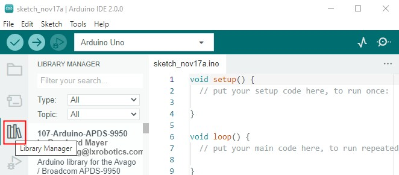
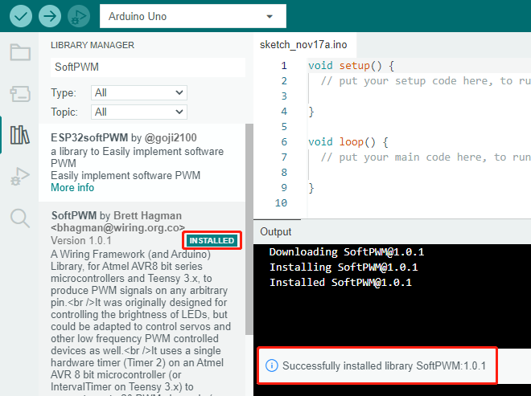
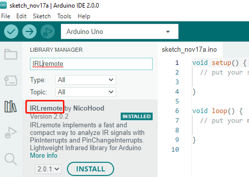
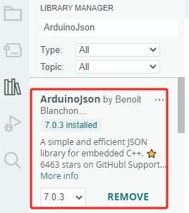

Note
Hallo und willkommen in der SunFounder Raspberry Pi & Arduino & ESP32 Enthusiasten-Gemeinschaft auf Facebook! Tauchen Sie tiefer ein in die Welt von Raspberry Pi, Arduino und ESP32 mit anderen Enthusiasten.
Warum beitreten?
Expertenunterstützung: Lösen Sie Nachverkaufsprobleme und technische Herausforderungen mit Hilfe unserer Gemeinschaft und unseres Teams.
Lernen & Teilen: Tauschen Sie Tipps und Anleitungen aus, um Ihre Fähigkeiten zu verbessern.
Exklusive Vorschauen: Erhalten Sie frühzeitigen Zugang zu neuen Produktankündigungen und exklusiven Einblicken.
Spezialrabatte: Genießen Sie exklusive Rabatte auf unsere neuesten Produkte.
Festliche Aktionen und Gewinnspiele: Nehmen Sie an Gewinnspielen und Feiertagsaktionen teil.
👉 Sind Sie bereit, mit uns zu erkunden und zu erschaffen? Klicken Sie auf [hier] und treten Sie heute bei!
Installieren der erforderlichen Bibliotheken
Was ist eine Bibliothek?
Eine Bibliothek ist eine Sammlung vordefinierter Funktionen und Header, die das Programmieren einfacher und effizienter machen. Bibliotheken bestehen typischerweise aus zwei Hauptdateien:
.h (Header-Datei): Enthält Funktionsdeklarationen, Makrodefinitionen und Konstruktor-Definitionen.
.cpp (Quellcode-Datei): Enthält Funktionsimplementierungen, Variablendefinitionen und andere ausführbare Komponenten.
Durch die Einbindung einer Bibliothek in Ihr Projekt können Sie die bereitgestellten Funktionen direkt aufrufen (z. B. #include <dht.h>), anstatt eigene Definitionen von Grund auf zu schreiben. Dies macht Ihren Code kürzer und leichter lesbar.
Obwohl es möglich ist, die Funktionsdefinitionen selbst zu schreiben, spart die Nutzung einer Bibliothek Zeit und reduziert die Komplexität.
Einige Bibliotheken sind bereits im Arduino IDE vorinstalliert, während andere manuell installiert werden müssen. Hier erfahren Sie, wie Sie die erforderlichen Bibliotheken für dieses Projekt installieren können.
So installieren Sie eine Bibliothek
Note
Die folgenden Anweisungen gelten für Arduino IDE 2.0. Wenn Sie Arduino IDE 1.x verwenden, lesen Sie Installing Libraries.
Hier sind die Schritte zur Installation einer Bibliothek:
Klicken Sie im linken Bereich der Arduino IDE auf das Symbol Bibliotheks-Manager.
Suchen Sie nach der Bibliothek:
Eine Liste der verfügbaren Bibliotheken wird angezeigt. Verwenden Sie die Suchleiste, um die gewünschte Bibliothek zu finden.
Um beispielsweise die
SoftPWM-Bibliothek zu installieren, geben Sie den Namen der Bibliothek ein und klicken Sie auf die Schaltfläche INSTALLIEREN.
Der Installationsprozess dauert normalerweise weniger als eine Minute. Nach Abschluss zeigt der Bibliotheks-Manager INSTALLIERT an.
Wiederholen Sie die oben genannten Schritte, um die
IRLremote-Bibliothek zu installieren. Achten Sie darauf, den Namen der Bibliothek korrekt zu schreiben.Installieren Sie anschließend die
ArduinoJson-Bibliothek.Suchen Sie nach und installieren Sie die
SunFounder AI Camera-Bibliothek, die letzte für dieses Projekt benötigte Bibliothek.
Indem Sie diese Schritte befolgen, haben Sie alle notwendigen Bibliotheken installiert und können sie für Ihr Projekt verwenden.